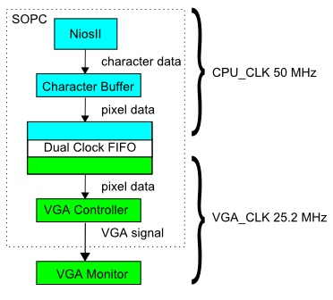

Christopher Torng (clt67), Yi Heng Lee (yl478)
{kind=link}
Introduction
Our project implements a prime number generator and RSA encrypter/decrypter on the Altera DE2 FPGA.
The project uses the Miller-Rabin primality test to search for prime numbers. The primes are displayed on a VGA monitor as they are generated. The user selects two generated primes that are multiplied to form the RSA public encryption key. The extended Euclidean algorithm is used to generate the encryption exponent and the decryption exponent. The encryption key is used to encrypt a text file on an SD card. The decrypted text is displayed on the VGA screen and written back to the SD card. The decryption key can be used to decrypt the file. The user can also enter the encryption and decryption keys to be used through the console.
High Level Design

Rationale and Sources of Project Idea
RSA is perhaps the most well known public key cryptography system and is used to secure many commercial electronic transactions. The security of RSA revolves around the difficulty of factoring a number into two prime factors. Since RSA encryption and finding prime numbers are both computationally intensive tasks, we thought it would be interesting to implement them in hardware on the FPGA to see how these algorithms can be implemented in an application specific integrated circuit. In addition, many companies such as Oracle and Intel have added onchip hardware support for encryption such as AES to their products. This project may help us understand the complexities involved in such implementations.
Background Math of Miller-Rabin Primality Test
The Miller-Rabin primality test is based on the properties of strong pseudoprimes and relies on a series of inequalities that hold true for composite numbers. These inequalities are used to check if a number is composite. If some of these tests fail, the number is maybe prime. If many of these tests fail, we become more convinced that the number is prime. Therefore, by trying a larger number of these tests, we can gain more confidence in a number’s primality, although we can never be completely sure of it. On the other hand, if a test passes, we immediately know that it is composite and can mark it as such.
Monier (1980) and Rabin (1980) showed that a composite number passes the test for at most ¼ of the possible bases. Thus, if N independent tests are performed on a composite number, the probability that it passes each test is 1/4N or less.
The inequalities rely on square roots of unity. Suppose that x is a square root of 1 mod p, where p is a prime greater than 2. The following must be true: x2 ≡ 1 (mod p), which results in (x-1)(x+1) ≡ 0 (mod p). This means that x is either (1 mod p) or (-1 mod p).
Now suppose that n is an odd prime. Then n-1 is an even number and can be written as 2s * d with s and d as positive integers and d odd. If we choose an a in (ℤ/nℤ)*, then: ad ≡ 1 (mod n) or ad ≡ -1 (mod n) for some 0 ≤ r ≤ s-1.
Recall Fermat’s Little Theorem: an-1 ≡ 1 (mod n).
If we repeatedly take square roots of an-1, we will get either 1 or -1. This means that if ad !≡ 1 (mod n) or ad !≡ -1 (mod n) for some 0 ≤ r ≤ s-1, then n is not prime. Thus, if a is chosen and the test passes, we are sure of n’s compositeness. We can call a a witness for the compositeness of n. Otherwise, a can be called a strong liar, and we can call n a strong probable prime. We can generate our a randomly in order to probabilistically determine n’s primality.
Background Math of RSA Encryption
We select two primes p and q and compute n = pq. n is referred to as the modulus.
Next, we choose an integer e that is relatively prime to (p-1)(q-1). e is referred to as the encryption exponent. The public encryption key consists of e and n. A message M is encrypted by the modular exponentiation operation C = Me mod n, producing the encrypted message C.
To perform decryption, we need to find the decryption exponent d that is a multiplicative inverse of e mod (p-1)(q-1). The private decryption key consists of d and n. The encrypted message C is decrypted by the modular exponentiation operation M = Cd mod n, producing the original message M.
The extended Euclidean algorithm is used to find d. In our implementation, we iterate through values of e, starting from e = 3, until the extended Euclidean algorithm indicates that the greatest common divisor of e and (p-1)(q-1) is 1, indicating that they are relatively prime, and computes a positive value for d.
Logical Structure
The Miller-Rabin primality test, extended Euclidean algorithm, and encryption/decryption function are implemented as separate hardware modules. A NiosII/s processor is used to control the modules.
The Miller-Rabin module outputs the generated primes to the NiosII, which prints them to the console and the VGA monitor. The user selects two prime numbers by pressing KEY3 as the numbers are generated. The NiosII then sends the two numbers to the Extended Euclidean algorithm module, which computes the encryption and decryption exponents. These values are reported to the user via the console and VGA monitor.
The SD card is inserted into the card reader on the DE2 board. The SD card interface module in the SOPC is used to interface between the NiosII and the card. A text file is read from the SD card. The NiosII converts each block of 2 characters in the text to a 16 bit number. For each number, it sends the number together with the encryption key to the encrypt/decrypt module, which encrypts the number using modular exponentiation. The encrypted number is then written back to the file by the NiosII. Decryption is done the same way except that the decryption key is sent to the encrypt/decrypt module.
Hardware/Software Tradeoffs
For the primality test algorithm, we considered the the Sieve of Eratosthenes, the Miller-Rabin test and the Lucas-Lehmer test. The O(n) memory requirement of the Sieve is a large drawback given the limited memory on the FPGA. While the Lucas-Lehmer test is fast and simple to implement, it can only be used on Mersenne numbers (numbers of the form 2n-1). Thus, we decided to use the Miller-Rabin test as it is fast and uses has a O(1) memory requirement.
We chose to implement the primality test, extended Euclidean algorithm, and the encryption/decryption functions in hardware as they are computationally intensive. While developing the lab, we first coded the algorithms in software and ran them on the NiosII to help us understand how to integrate them into the project. We found that the hardware implementations of the algorithms performed significantly faster than the software implementations.
Relationship of Design to Standards and Patents
The patent for the RSA algorithm expired in 2000. Our project adheres to the standards set by the SD Association for using the SD card through an SPI interface.
Hardware Design
NiosII processor
A NiosII/s processor is used to control all the modules in the project. SDRAM is used as memory for the NiosII. A JTAG UART interface was also connected to the NiosII for serial communication with a computer so that a user can manually enter in encryption or decryption keys. Since SOPCbuilder is unable to instantiate PIO ports of size greater than 32 bits, each 64 bit port had to be instantiated as two separate 32 bit ports. When reading from the ports, the two 32 bit inputs from the ports are concatenated in software to get the 64 bit data. When writing to the ports, the upper 32 bits are written to one port and the lower 32 bits to another.
Miller-Rabin Primality Test
When reset by the NiosII, this module reads the start value n supplied and a desired accuracy for the test (ie. the number of independent tests to do). The tester then rewrites n-1 as 2s * d, generates constrained random numbers a, and tests for primality as described in the background math section.
The pseudocode we implement is as follows:

We feed in odd numbers and a desired accuracy and wait for a finish signal from the module. When the finish signal is detected, we check the prime wire to see whether our number is maybe prime or definitely composite.
If the number is prime, we save it and if the user presses the correct key, this number is used in the RSA encryption algorithm. The number is sent to the VGA module to be viewed by the user.
If the number is not prime, we simply feed in the next odd number.
The random numbers were generated using a random number generator from Stochastic Chemical Reaction Simulation by Bruce Land.
The Miller Rabin module uses the encrypt/decrypt module to perform modular exponentiation because we didn't have enough logic elements left to instantiate modular exponentiation logic in the Miller Rabin module. Multiplexers are used to select whether the encrypt/decrypt module receives data from the NiosII or the Miller Rabin module.
Extended Euclidean Algorithm
Below is the pseudocode for our implementation. Unlike the standard algorithm, we do not compute x and x_prev as their values are not needed for our project.
When reset by the NiosII, the algorithm module reads the values of the two primes p and q from the PIO ports of the SOPC and computes (p-1)(q-1).
The module then performs the extended Euclidean algorithm to find the greatest common divisor of e and (p-1)(q-1) as well as the modular inverse of e mod (p-1)(q-1). If the greatest common divisor is 1 (indicating that e and (p-1)(q-1) are relatively prime to each other) and the modular multiplicative inverse is positive, the module returns the values of e and the modular multiplicative inverse d to the NiosII. Otherwise, e is incremented by 2 and the algorithm executed again, this is repeated until a value of e which results in a greatest common divisor of 1 and a positive inverse is found. e will be used as the encryption exponent and d as the decryption exponent.
For the divide and modulo operation, we use the 64 bit divider generated by Altera Megafunction wizard. Due to the long critical path of the divider, we pipelined it into a 20 cycle divider using options in the wizard to avoid violating the timing constraints. The state machine waits in the DIVIDE state until the divider is done. The state machine was implemented to be compatible with dividers that take any constant number of cycle, the parameter DIVIDE_LATENCY just needs to be changed to make the state machine wait for the correct number of cycles.
Encrypter/Decrypter
When reset by the NiosII, the encrypter/decrypter reads a base, a modulo and an exponent value from the PIO ports of the SOPC. The module performs a modular exponentiation computation that calculates the value of baseexponent mod modulo. The algorithm we use for performing the modular exponentiation is the right-to-left binary method. For encryption, we set the message as base, e as exponent and n as modulo to produce the encrypted message as the result of the computation. For decryption, we set the encrypted message as base, d as exponent and n as modulo to produce the decrypted message. The modulo operations are implemented in the same way as in the Euclidean module.
SD card interface
The interface between the NiosII and the SD card is handled by the Altera University Program SD Card IP Core module in SOPCbuilder. An advantage of this module is that it includes a software drivers that can manipulate the FAT16 file system on the SD card. This allows the user to user to search for files by name and traverse through directories. As a result, it provides more functionality than methods that access data by manually specifying the byte address of the data on the SD card.
The process of getting the SD card module working turned out to be more complicated than expected, as the drivers could not detect the FAT16 file system on the SD card initially. Stepping through the execution of the code, we discovered that the software was mistakenly deciding that the card had a FAT12 file system, which the module did not support, even though the card actually had a FAT16 file system. We changed the drivers to force it to correctly treat the card as having a FAT16 file system, which got the module working. This was done by changing boot_sector_data.bits_for_cluster_index = 12 on line 471 of altera_up_sd_card_avalon_interface.c to boot_sector_data.bits_for_cluster_index = 16.
Our modified drivers also contain changes to enable reading of the encrypted files, since some parts of the encrypted files could appear as the end of the text string to the default drivers, causing the default drivers to stop reading. However, the changes mean that the program has to be coded to specify amount of characters to read. For anyone who is interesting in using the SD card module, the default drivers are generated in /BSP/drivers/src and inc by Altera Monitor, making the changes in the previous paragraph should get it to work. Also note that the driver files get replaced every time Altera Monitor regenerates the BSP.
Also, we discovered that the SD module does not work well with the NiosII/f because it reads data from the SD card by directly referencing addresses of volatile pointers to perform IO loads and store. The data cache on the NiosII/f causes these memory operations to give the wrong data because it reads from the cache instead.
VGA Controller and Character Buffer
In order to display a text output from the NiosII onto a VGA monitor, we instantiated the VGA controller in SOPCbuilder. The VGA controller receives pixel data through an Altera Avalon interface and outputs a VGA signal to the VGA connector on the DE2 board.

The character buffer converts characters into pixels. The NiosII writes characters into the buffer by directly writing to a memory location in the buffer determined by the base address of the buffer and an offset calculated from the X and Y coordinate of the character.
Since the VGA controller is clocked using the VGA clock of 25.2 MHz, a Dual Clock FIFO buffer is instantiated in SOPCbuilder to mediate the transfer of pixel data from the character buffer, which is clocked at 50 MHz, to the VGA controller.
Software Design
The NiosII runs a C program that controls the hardware modules, interfaces with the SD card and writes characters to the character buffer.
The program implements a user interface where the user selects which functions to perform by pressing KEY3 to KEY1 on the DE2 board.
At the top menu shown below, the user is given the option to generate primes, open a file for encryption/decryption or input encryption and decryption keys through the console. The currently used primes and the RSA parameters generated from the primes are also displayed.
{kind=link}
If KEY1 is pressed, the program starts generating prime numbers by sending odd numbers to the primality tester module. If the primality tester reports that the number is prime, the program prints the number onto the screen. The user can select the prime to be used for encryption by pressing KEY2. KEY3 exits prime generation and returns the program to the top menu.
{kind=link}
If KEY2 is pressed, the program reads a text file from the SD card and displays it on the screen as shown below (click to zoom).

The user can encrypt the file by pressing KEY2. The program breaks up the text into blocks of 2 characters (the blocks can be scaled to a larger number of characters when larger encryption keys are used). Each block is converted into a 16 bit number by concatenating the integer representation of the characters. Each number is then dispatched to the encrypt/decrypt module together with the encryption key to be encrypted. The encrypted message is displayed on screen as shown below, as well as written back to the file on the SD card.
{kind=link}
Viewing the file in the SD card on a laptop, we can see that what was once an enlightening article on RSA has been encrypted into gibberish.
{kind=link}
Putting the SD card back into the DE2, the user can open the file again and press KEY1 to decrypt the file. Again, blocks of the text is converted into numbers and sent to the encrypt/decrypt module, this time with the decryption key. The decrypted file is displayed and written to the SD card. The decrypted output is shown in the image below. By comparing the decrypted file to the original text file, we checked that the decryption functioned correctly.
{kind=link}
From the top menu, the user can also press KEY3 to input values of the encryption key, decryption key, and accuracy of the Miller-Rabin test (number of random numbers to check the prime candidate with) from the console of a computer connected to the DE2.
Results
The project is able to find prime numbers using the Miller-Rabin primality test and encrypt/decrypt text files on an SD card using RSA encryption. Due to the limited number of logic elements on the DE2 board, our hardware can generate prime numbers up to 32 bits in size, resulting in 64 bit encryption keys. The extended Euclidean algorithm module can find the greatest common divisor of two 64 bit numbers. It also computes a 64 bit multiplicative modular inverse, which is used as the decryption key. However, we were only left with enough logic elements to instantiate a encrypt/decrypt module that supports a 32 bit encryption key. The project used about 93% of the logic elements on the DE2 board. By parameterizing the width of the wires and registers in the Verilog code, the modules can be extended to support larger numbers when instantiated on a larger FPGA.
Our implementations in hardware of the generation of the prime numbers and the encryption/decryption were relatively fast. The hardware implementations were many times faster than software implementations running on the NiosII. The speed and accuracy of the Miller-Rabin test varied based on what the user selected for the number of random integers to test the potentially prime number on.
Safety and Usability
There are no forseeable safety issues with using this project. Interactions between the user and the project involve only pressing buttons on the DE2 board and entering values in the console.
Conclusions
The project was able to demonstrate the implementation of the Miller-Rabin primality test, extended Euclidean algorithm and RSA encryption/decryption in hardware. We also learnt about interfacing with an SD card and how to display text to a VGA output. Although the encryption keys generated by our project are too small in magnitude to provide any real security (commerically used RSA encryption keys are usually 1024 bits in size), the implementation approach we learnt can be scaled up for implementation on hardware that we design in the future. Overall, the project was very interesting and met our expectations. Next time, we would use the DE2-115 instead to enable support for larger numbers.
The primality test modules were designed to be easily parallelizable. With a larger FPGA such as the DE2-115, the project could be improved but having multiple primality test modules run in parallel (each module testing a different number) to increase the speed at which primes are generated. Similarly, the encrpyt/decrypt modules can also be parallelized to improve performance. It would also be interesting to implement AES encryption on the FPGA.
Intellectual Property Considerations
The project uses Altera IP generated from SOPCbuilder and Megafunction wizard, including the NiosII, SDRAM controller, SD card interface, PLLs, VGA controller, 64 bit divider, SOPC PIO ports, character buffer and dual clock FIFO buffer. All other code was written by us based on algorithms that in the public domain. The text shown in the photos demonstrating encryption and decryption are excerpts from the Wikipedia article on RSA, which is under the GNU free documentation license.
Appendix A: Code
Verilog code
C code
Appendix B: Task Breakdown
| Task | Contributor |
|---|---|
| High level design | Both |
| Prime number generation | Chris |
| Extended Euclidean | Yi Heng |
| RSA Encryption/Decryption | Yi Heng |
| SOPC hardware/software | Yi Heng |
| Testing | Both |
| Weekly reports to TA | Both |
| Webpage | Both |
Appendix C: References
- Wikipedia:Miller-Rabin primality test
- Rabin-Miller Strong Pseudoprime Test
- Monier, L. "Evaluation and Comparison of Two Efficient Probabilistic Primality Testing Algorithms." Theor. Comput. Sci. 12, 97-108, 1980.
- Rabin, M. O. "Probabilistic Algorithm for Testing Primality." J. Number Th. 12, 128-138, 1980.
- Fermat's Little Theorem
- Rosen, Kenneth H. 2007. Discrete Mathematics and its Applications 6th Edition. Boston: McGraw-Hill
- Wikipedia:RSA
- Wikipedia:Extended_Euclidean_algorithm
- Wikipedia:Modular_exponentiation
- Stochastic Chemical Reaction Simulation
- Video out IP cores for Altera DE boards
- Altera University Program Secure Data Card IP Core